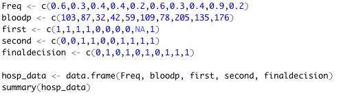
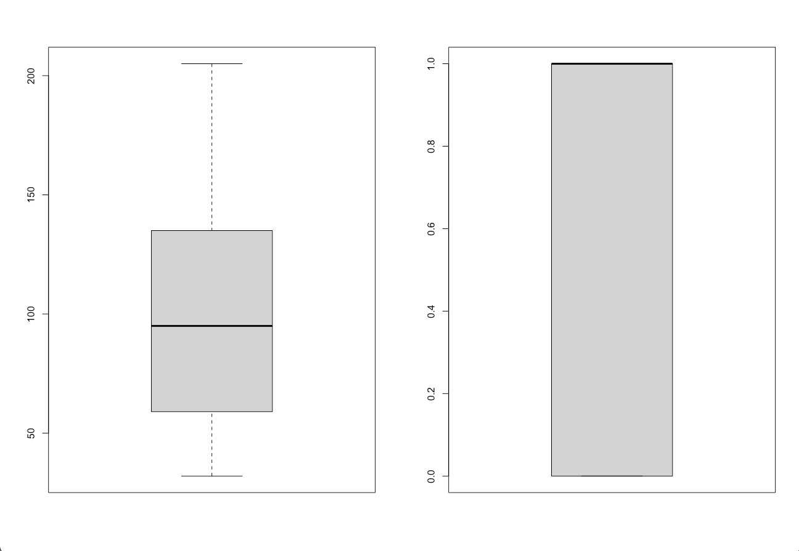
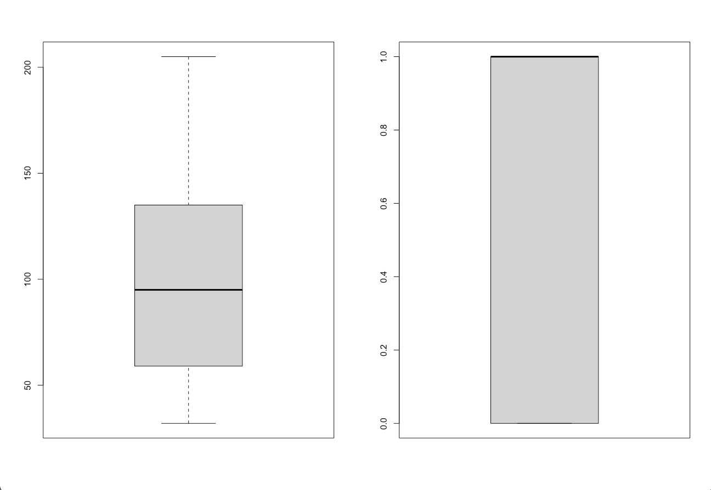

Module 04: Blood Pressure Diagnoses
--February 1st, 2021--
This week's assignment required the analysis of some sample medical data representing blood pressure diagnoses of 10 different patients.
Two side by side plots were required. The assignment wanted a histogram next to a boxplot, and for these plots to visualize firstly the patient blood pressure
and then the medical doctor's final decision regarding their need for immediate care. I found that the most meaningful way to organize the plots was by comparing
the histogram of blood pressure to the histogram of final decision, and likewise for the box plots.
I first created numeric vectors with the supplied data, with help from the assignment's hint. I then combined the vectors into a dataframe named "hosp_data".

I then generated a side by side plot using "par(mfrow=c(1,2)", placing the histograms for blood pressures and final decision together for comparison.
 Next I generated a side by side plot placing the box plots for blood pressure and final decision next to eachother.

The histograms ended up being far more useful for data comparison than the box plots, as you are able to see the different distributions of the data more effectively.
Next I generated a side by side plot placing the box plots for blood pressure and final decision next to eachother.

The histograms ended up being far more useful for data comparison than the box plots, as you are able to see the different distributions of the data more effectively.
From the side by side histograms you can see that the relationship between patient blood pressure and final decision for care by a medical doctor appear to make sense.
6 patients received high priority for immediate medical care. Four of the patient blood pressures stand out as being very abnormal and dangerous. Two patients had blood pressures
under 50, indicating severe hypotension, while two other patients had blood pressures over 150, indicating cardiovascular hypertension. The other two patients that received immediate care
may have had relatively normal blood pressures but other health variables not recorded led to the doctor's final decision.
The information presented is not nearly enough to make an informed decision as to the efficacy and accuracy of the medical doctor's diagnoses. For one there are only
10 patients presented in the dataset, and in order to properly gauge the efficacy of a diagnosis we need data on the patient's other health markers, like blood content levels,
body temperature, heart rate, and general condition.
As always the compiled R file can be found below, and all of the files can be found on my Github page.